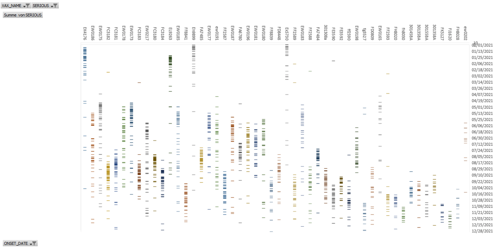

RNA Degradation
home | Booster Warnings by Month | Moderna | Pfizer | Janssen | Moderna (outside USA) | Pfizer (outside USA) | Janssen (outside USA) | International Deadly Lots | 1st & 2nd Doses | Severe | Lethal | Size Matters | Lot Sizes | Time till onset | Second Peak | Lot Expiry Dates | RNA Degradation | Causality | All or Nothing | Clusters | Symptom | Paralysis | Children | Gender | States | Geography | Japan | Case Reports | Whistle Blowers | EMA Leaks | Video Library | Treatment | Background | Download Source Code | Data Cleaning | Donate
If this site is slow loading that's because over 1 million people are accessing it right now. Please use auxillary site HowBadisMyBatch.com which has been set up to cope with this overload. Thankyou.
Videos
Here are two videos providing more information about the RNA degradation
Further Resources
Degradation During the Process of Manufacture
On 26th November 2020, the EMA met with Pfizer and presented an objection regarding the % of intact mRNA. The document states that the % RNA integrity of the vaccines decreases DURING the process of manufacture, between stages 1, 2 and 3 of the manufacturing process.
Here is the actual statement in the document -
So, even during the process of manufacture and filling, the % of intact mRNA falls by 10%, and there is no reason for us to think it stops degrading/falling after that !
Looking at VAERS we can see how many adverse reactions were produced by all lots on each day after manufacture. In this way we can determine if toxicity decreases as days pass.
If we measure toxicity by the percentage of reports on each day that are severe, then there is a decrease over the first 30 days after manufacture. However, after 30 days the vaccine nolonger appears to egrade - it becomes stable
IMAGEEffect of % Intact RNA on Toxicity
There is a correlation of 0.56 between % of intact RNA and number of severe reactions per vial. From the EMA documents, we have the % RNA integrity of each batch and the exact size of each batch, and from VAERS we can count the number of severe reactions that each of those batches produced. 56% of the variation in number of severe reactions per vial was produced by the variation in % RNA integrity. Here is a chart
A Report from Sweden
In this report, submitted by independent researchers in Sweden, it appears that new lots are released MONTHLY and expire by the end of that month. Over the month, their toxicity appears to decline rapidly. The nearer a batch is to expiry, the lower are the number of adverse effects generated by it. This cycle repeats every month.
The author describes these results as "devastating".
The vaccine may be degrading as they approach expiry. As the mRNA degrades, it looses its toxicity. .
"When it is broken, it is less harmful. When it is fully functioning it is lethal."
Investigating the Sweden Effect
The Swedish report seemed to show that toxicity of vaccines decreases rapidly within the first 30 days after manufacture. I wanted to test this with the USA data found in VAERS 2021. So first I had to gather all the reports for vaccinations taking place within 30 days of manufacture. I obtained the manufacturing dates from the CDC list of 339 lots, and then I located all the reports for these lots in VAERS. For each report I then counted the number of days between manufacture and vaccination.
As you can see, most vaccines are given 40 days after manufacture
Frequency of Severe Adverse Effects Decreases as Time Passes
Here are two charts prepared by my colleagues. They show the frequency of severe adverse reactions (SAEs) for every lot as time passes. They have plotted the date of each individual SAE for each lot. You can see that initially there is a high density of these SAEs for each lot, but after about 1 month the density of SAEs becomes much less, then remains so for a long time. This demonstrates that lots are simply depleted as time passes, so there is less of it around to generate adverse reactions.
It is also apparent that the lots produced in January 2021 and February 2021 display a higher density of severe adverse reactions than lots produced in April and May, and the density is even less for lots produced in June, July, August and September. What can account for this? Well, in January and February the lots were freshly made, and there was intense demand for them - they flew off the shelves - consequently the lots were used before the RNA could degrade. The popularity of vaccines dropped steeply after April, so vaccines sat on the shelves for much longer, and degraded much more - consequently their toxicity was reduced.

Here is a table showing the number of adverse reactions (ADRs), number of deaths, and number of disabilities for a single lot - EN6200 - that was manufactured on 9th January 2021 - and deployed in the USA. The DAYS column is the number of days after manufacture. What this table shows is the vast majority of the adverse reports, deaths and disabilities are for vaccination dates within a 30 day window, that begins 40 days after manufacture. Infact, adverse reactions peak on day 40, then decrease exponentially for people vaccinated on each of the following 30 days. This short window of rapidly declining adverse reactions over a period of 30 days is exactly what was reported for Sweden - and this same pattern repeats for every single vaccine lot deployed in 2021.
Contact
covidscienceteam@protonmail.com
Created by Craig Paardekooper ©2021